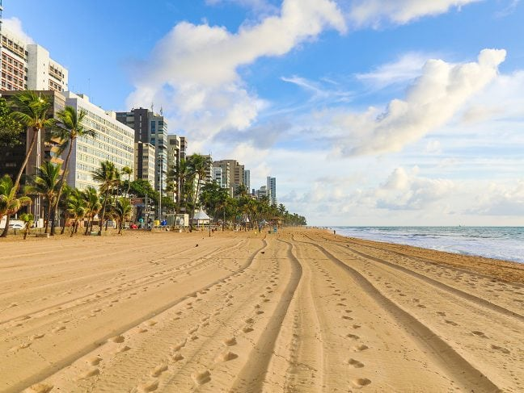
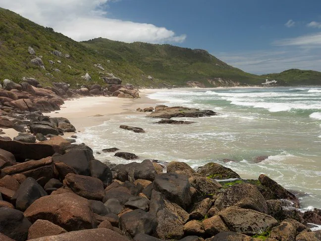
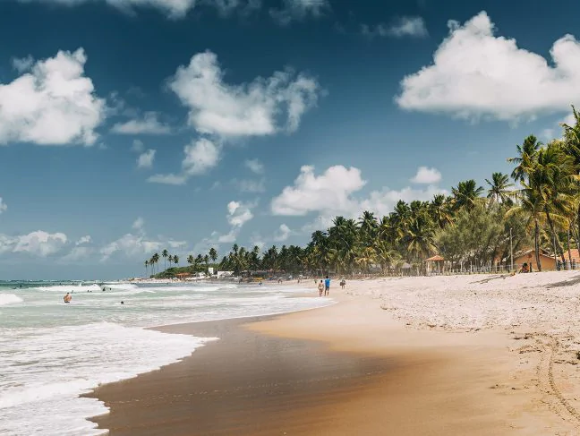
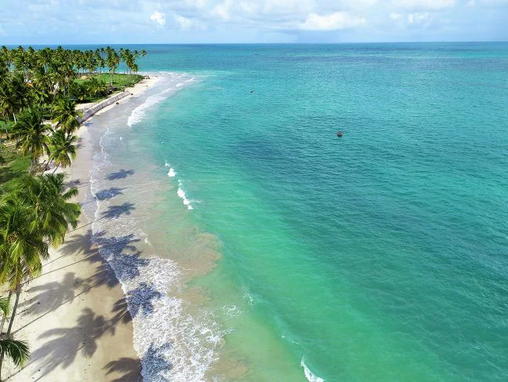

Pontos TurísticosPraiasVocê sabe quais são as melhores praias de Recife? Vamos te mostrar as praias mais inesquecíveis da capital pernambucana. |
|||
Praia Boa Viagem
Águas cristalinas e mansas, coqueiros que se destacam e enriquecem a paisagem: essa é a praia de Boa Viagem.
|
 | ||
|  |
Praia de Calhetas
Uma praia que é uma pequena joia: uma faixa de 200 metros com formato de coração,rodeada por rochas.
|
||
Praia de Porto de Galinhas
Sem tráfego agitado, sem vida noturna excessiva, apenas relaxamento e olhos abertos para admirar a sua beleza.
E se você não quiser nem manter os olhos abertos, aproveite para descansar em uma rede nas águas transparentes e quentes do Atlântico.
Um viajante entusiasta descreve brevemente a Praia do Porto de Galinhas, a joia do Recife. Uma instituição que foi eleita a "Melhor Praia Brasileira"
oito vezes seguidas por leitores da revista brasileira Voyage& Tourism.
|
 | ||
|  |
Praia dos Carneiros
A beleza às vezes tem traços ríspidos e pode não ser uma qualidade que salta aos olhos imediatamente, mas deve ser buscada e valorizada com paciência.
As dificuldades de acesso à Praia dos Carneiros provavelmente preservaram o seu charme intacto por muito tempo. De Recife, você deve viajar mais de 100 quilômetros
para visitar outra candidata à praia mais bonita do Brasil. Localizada na cidade de Sant'agostino, as opções são sempre incríveis: águas cristalinas, calmas e quentes,
ideal para os amantes de Snorkeling ou mesmo para um banho de mar único e relaxante.
|
||